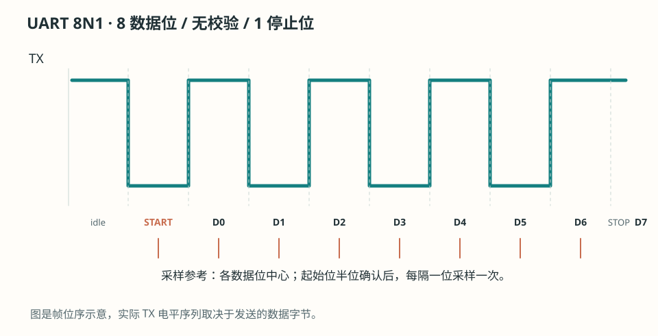
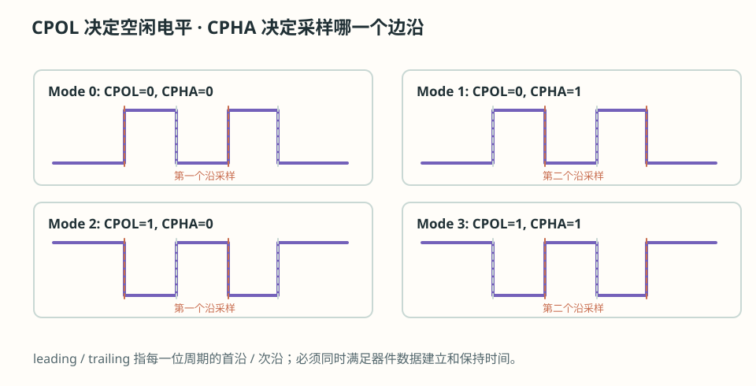

UART 与 SPI：比特、时钟边沿和采样窗口
用 8N1 UART 和 SPI Mode 0 的可运行模块理解异步接收、CPOL/CPHA、串行移位与协议测试。
01 / UART 没有共享时钟，接收端怎样知道在哪里采样？
UART 的 TX 与 RX 只共享约定的波特率、数据格式和电气层，不共享一根位时钟线。如果在比特翻转边界采样，微小的波特率误差、异步起始边沿检测延迟和传播延迟都可能让数据错误。
以常见的 8N1 为例：空闲为 1，一位起始位为 0，随后 8 个数据位按最低位优先传输，无校验，最后一位停止位为 1。每一位持续一个 bit period。

接收端检测到 RX 起始位下降后，先经过约半个 bit 周期检查起始位中点仍为低，再按整位周期采样八个数据位和停止位。8 倍或 16 倍过采样是常见方式，并不是 UART 唯一合法的实现方式；直接以更高 FPGA 系统时钟计数到各 bit 中点，也可以实现简单接收器。
连续采样误差会累积；需要按发射机和接收机时钟容差、帧长度以及起始位检测偏差计算最坏情况。不要用“永远在中间就一定可靠”替代具体时序分析。
02 / 一个清晰的 8N1 发送器与接收器
仓库新增 uart_tx.v 和 uart_rx.v，两者使用同一系统 clk，以整数 CLKS_PER_BIT 定义每个位的周期。发送器使用十位帧缓存，从最低位开始移出，busy 表示占用，start 仅在空闲时接受。接收器用两级 FF 同步 RX，再用计数器在位中点采样。
// 发送逻辑片段：从最低有效位开始输出
if (start && !busy) begin
frame <= {1'b1, tx_data, 1'b0}; // STOP, data, START
bit_idx <= 0;
tx <= 1'b0; // START 位
busy <= 1'b1;
end
// 下一位到达时: tx <= frame[bit_idx + 1];整帧十个位，需要 10 × CLKS_PER_BIT 次系统时钟采样。CLKS_PER_BIT 取整数时会产生波特率量化误差。例如 50 MHz / 115200 约为 434.03 次时钟每位，取 434 后实际 baud 约为 115207.37；某些设计需要累加器、分数分频或根据目标容差重新计算。
03 / SPI 的四种模式：先确定哪一个沿采样
SPI 通常使用 SCLK、MOSI、MISO、CS_n。控制器驱动 SCLK 与片选；双方在所约定的边沿改变或读取数据。CPOL 定义 SCLK 空闲电平，CPHA 定义采样发生在每个数据位的第一个还是第二个边沿。

| Mode | CPOL | CPHA | 空闲 SCLK | 采样沿 |
|---|---|---|---|---|
| 0 | 0 | 0 | 低 | 上升（leading） |
| 1 | 0 | 1 | 低 | 下降（trailing） |
| 2 | 1 | 0 | 高 | 下降（leading） |
| 3 | 1 | 1 | 高 | 上升（trailing） |
当 CPHA=0，第一位 MOSI 必须在首个采样沿之前有效；当 CPHA=1，数据可以在首个边沿推出，在第二沿采样。一定结合目标芯片 datasheet 的建立时间、保持时间和片选时序，不能只靠模式数字。
04 / 只实现 SPI Mode 0，并明确它不是四模式控制器
可运行样例 spi_master_mode0.v 以系统时钟计数形成 SCLK，每个下降沿准备下一数据位，每个上升沿采集 MISO，按 MSB-first 发送八位。数据通过内部移位寄存器保持不变，串行时钟由寄存输出驱动。
// 片选有效期间：在 SCLK 上升沿采样当前 MISO
if (!phase) begin
sclk <= 1'b1;
rx_shift[bit_index] <= miso;
phase <= 1'b1;
end else begin
sclk <= 1'b0;
phase <= 1'b0;
if (bit_index != 0) begin
bit_index <= bit_index - 1'b1;
mosi <= tx_latched[bit_index - 1'b1];
end
end下列回环测试使用 miso = mosi，因而发送的字节应在 RX 中被完整还原。这只是确定性逻辑回环验证，不证明目标外设的走线、片选建立时间、输入延迟与 IO 约束正确。
iverilog -g2012 -Wall -s tb_spi_master_mode0 -o /tmp/spi.vvp examples/rtl/spi_master_mode0.v examples/tb/tb_spi_master_mode0.v
vvp /tmp/spi.vvpCPHA 参数就宣称支持四模式。05 / 让时序错误可被复现
UART 测试台将 TX 与 RX 相连并发送 8'hA5，检查 rx_valid 恰好出现一次且 rx_data 相等；SPI 测试台验证 8 位回环、片选期间的 SCLK 边沿数和空闲行为。两者分别给定 watchdog，避免“测试没有实际完成却 PASS”。
iverilog -g2012 -Wall -s tb_uart_loopback -o /tmp/uart.vvp examples/rtl/uart_tx.v examples/rtl/uart_rx.v examples/tb/tb_uart_loopback.v
vvp /tmp/uart.vvp
bash scripts/run_rtl_tests.sh仿真把电气时序理想化；UART 输入的两级同步器也无法通过 RTL 波形验证模拟亚稳态；SCLK 与 MISO 之间的真实延迟需要外部器件数据手册、I/O 约束和板级测量共同确认。
为什么 SPI Mode 3 的采样沿是 SCLK 上升，而 Mode 0 也是上升？
它们的时钟空闲电平不同。Mode 0 的上升是第一个沿（CPHA=0），Mode 3 的上升是第二个沿（CPHA=1）；这决定了 MOSI/MISO 数据何时被准备好。